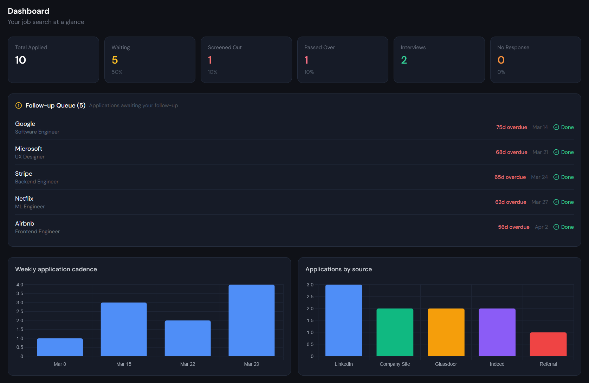

A self-hosted web application that manages the full lifecycle of a job search — from application to offer. No spreadsheets. No sync conflicts. No third-party data storage.

After a month of applying, most people have three versions of the same spreadsheet, resume files scattered across devices, and no way to answer the simplest question: which resume did I send them?
Resume_FINAL_v2.docx sitting in a folder you can't reliably sync across your laptop and your phone.
When a recruiter calls two weeks later, you can't quickly surface what you sent them, when, or what the role actually said.
Applications go cold because there's no queue surfacing roles that haven't had a reply in seven or more days.
You're applying everywhere without knowing which platforms are actually generating conversations. The gut feeling is almost always wrong.
"Most people know their job search is disorganized. The harder question is why they're still managing it in a spreadsheet three weeks in." — From the project story
A full application lifecycle manager, built for people who treat their job search like the professional project it is.
Capture the exact resume and cover letter sent for each role. Never walk into an interview referencing the wrong version of your history.
Email correspondence, interview prep notes, post-interview debriefs, and file attachments — all linked directly to the role they belong to.
Total applications, response rate, average time to response, and a follow-up queue of roles past seven days without a reply — at a glance.
Table view with aging color-coding, a Kanban board for drag-and-drop pipeline management, and a mobile card view for checking status on the go.
Migrate from your current Excel or CSV tracker with auto column mapping. No manual re-entry. Keeps your history intact from day one.
Runs on your own infrastructure. No SaaS, no subscriptions, no third-party ever touching your application history or uploaded documents.
The dashboard calculates response rates by source and color-codes them by ROI. When you're applying to 15 roles a week across multiple platforms, this answers the question a spreadsheet never can.
Response rate. Double down here — this platform is working.
Moderate returns. Worth maintaining, not worth prioritizing.
Time cost isn't being returned. Redirect effort elsewhere.
A single installer script handles everything on Debian or Ubuntu. Docker Compose works too. No cloud account. No vendor dependencies.
Run the installer on any Debian 12 or Ubuntu 22.04+ server. Node.js, PostgreSQL, nginx, firewall, and systemd service — all handled automatically.
Load your existing Excel or CSV tracker. The importer auto-detects column headers even with a title row. Your history carries over cleanly.
Log applications with their specific resume and cover letter. Move them through the pipeline. Let the dashboard surface what needs attention.
Read the source analytics. Stop applying everywhere and focus on the two or three channels that are actually generating conversations.
No proprietary runtimes. No vendor lock-in. Standard technologies any capable engineer can run, maintain, and extend.
| Layer | Technology |
|---|---|
| Frontend | React 18 Vite Tailwind CSS Chart.js |
| Backend | Node.js 20 Express |
| Database | PostgreSQL 16 |
| Auth | JWT + bcrypt httpOnly refresh cookies |
| Deploy | systemd + nginx + ufw or Docker Compose |
Job Tracker is currently being shared with a small group of job seekers for free. The live demo is loaded with realistic sample data — explore the full interface before installing a single thing.
Demo credentials: admin / Demo2026 · Reset nightly.